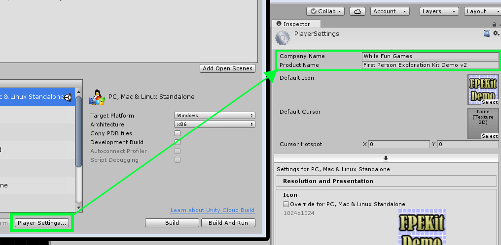
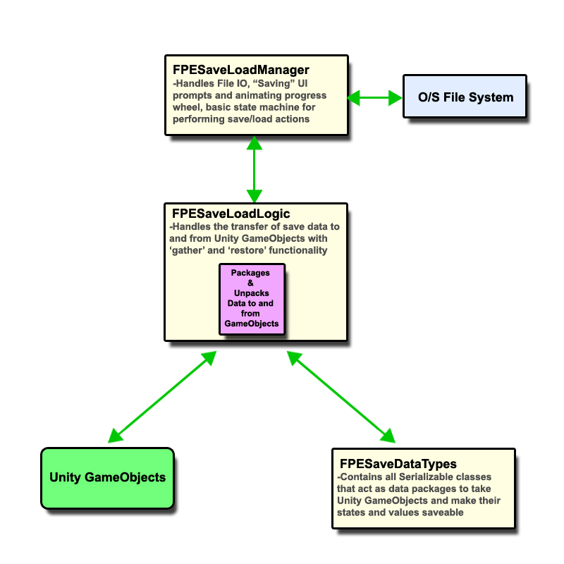
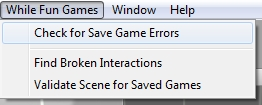
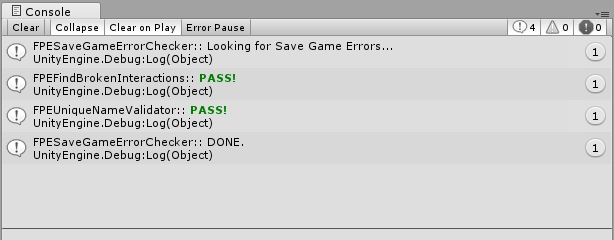
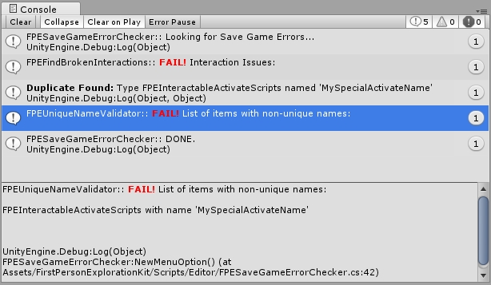

The included game saving and loading functionality was specifically designed to work with this package. It can be extended, modified, or ignored and replaced entirely.
By default, the saved game files are located in "Application Persist Data Path" folder. See Unity documentation for specific details.
For example, on Windows 7, that location is:
C:\Users\[USERNAME]\AppData\LocalLow\While Fun Games\First Person Exploration Kit Demo v2\
Note that the folders "While Fun Games" and "First Person Exploration Kit Demo v2" are tied to the Player Settings inside Unity for the demo and defaults for the asset package. To change these, open File -> Build Settings -> Player Settings, and change the Company Name and Product Name fields to suit your needs. Once changed, the saved game system will continue to work without any further changes.
There are a few key files/groups used by the saved game system:
| options.dat | Contains all the data required to read and write game options such as look sensitivity. |
| core.dat | Contains a small set of core data such as last level saved, and so on. |
| inventory.dat | Contains details about player inventory such as items, quantities, notes, diaries, and so on. |
| player.dat | Contains core player data such as player position, player view orientation, and so on. |
| level_N.dat | Contains level-specific (where N is the index of the level, for example 'level_1.dat') object data for each saved level. Note that these are the only files that have both a 'full' and 'auto' save file. |
Below is a high level architecture diagram showing how the system is structured.
By default, the save game system uses C# object serialization and binary formatting to write data to the file system. This serialization approach can be replaced with an off the shelf JSON solution, XML, plain text, or whatever you are most comfortable with.
The reason native C# serialization was used is that it "comes with Unity". There are plenty of JSON libraries out there, but shipping them with this asset was not feasible for licensing and maintenance reasons.
To replace the core of the save game system, you only need to change the parts of the system that write data out to files. These are all contained within the 'FPESaveLoadManager' class. A separate class, called 'FPESaveLoadLogic' and script called 'FPESaveDataTypes' house the generic interface between the Game Objects and file system. If replacing with a JSON package, for example, you would just need to change how the various data types are written out to JSON inside the 'FPESaveLoadLogic' script. The rest of the logic should "just work", as it doesn't care how the types were created from files, as long as the data is valid.
Lastly, the save game system has been tested on Windows PC ONLY. Specific design and testing considerations must be made for other platforms (e.g. mobile, consoles, etc.)
Note: This system only serves as a guideline for creating a larger save system for your complete game. This system ensures that the core data and features in First Person Exploration Kit can be saved and loaded. Guidance and example code has been provided to assist with creating custom save data types and objects that fall outside the scope of this package.Game Saving and Loading is handled by the FPESaveLoadManager prefab. If using FPECore, one is automatically created for you.
All the public interfaces for saving and loading are inside the FPESaveLoadManager.cs script file in the code region called "PUBLIC_INTERFACES". They are:
| SaveGame() | Performs a "full save", for use with 'Save Game' menu option. |
| LoadGame() | Performs a "full load", for use with 'Load Game' menu option. |
| ChangeSceneToAndAutoSave() | Changes scene and auto-saves current scene's state. |
| ChangeSceneToNoSave() | Changes scene and DOES NOT auto-save current scene's state. |
| SavedGameExists() | Checks if a saved game exists. Should be called to refresh menu UIs (e.g. if there is no saved game, you should disable/hide the load game button). |
| StartANewGame() | Erases existing saved game files and resets base data to fresh set. |
| SaveGameOptions() | Saves game options based on current state of FPEInputManager. |
| LoadGameOptions() | Loads game options and updates state of FPEInputManager to reflect those options. |
These interfaces can be hooked into your game menu(s) or hot keys as you see fit.
The core 'Interactable' types, player inventory and player state, and game options data are saved and loaded. If you want to create a custom data type, you can do that by adding your type to the 'FPESaveDataTypes' script file, then adding logic to 'gather' and 'restore' that data type's data to and from the scene. There is a code region called 'CUSTOM_TYPES' that is designated for this purpose.
The included basic types allow you to write out basic Unity stuff like: Vector2, Vector3, Transforms, and Quaternions. These can be combined to save base Unity data along with other custom object data.
Other included types that were created to work with this assets specific 'Interactable' types can be used as guide for creating complex data types for just about any object or class.
In addition to the built in types listed below, you can also create your own custom data types.
All Inventory items must be in a Resources folder under the "InventoryItems" sub folder.
All Inventory and Pickup type objects in your scene(s) MUST be a prefab. If they are not, the save game system will not be able to load them from Resources folder.
When saving Pickup type objects, the root name before the first space or opening parenthesis will be the assumed prefab name. For example, pickup objects in your scene named 'demoSoup', 'demoSoup (1)', 'demoSoup(Clone)', and 'demoSoup special2_FINAL' will all be considered to be derived from the prefab 'demoSoup'. However, an object named 'demoSoupIntro' will be assumed to be from prefab named 'demoSoupIntro'.
Note: To customize this delimiting character to something other than a space, see FPEObjectTypeLookup class under the 'PickupPrefabDelimiter' char array variable.All Pickup type objects must be located in a Resources path under the sub folder 'Pickups'. For example, 'demoSoup' is assumed to be located in 'Resources/Pickups/demoSoup.prefab'
All Inventory type objects must be located in a Resources path under the sub folder 'InventoryItems'. For example, 'demoApple' is assumed to be located in 'Resources/InventoryItems/demoApple.prefab'
Note: To customize Resource paths, refer to the FPEObjectTypeLookup class.All inventory type prefabs must have a lookup entry provided inside the FPEObjectTypeLookup class. If no entry is provided, saving and loading that object type will not work and an error will be printed.
For example, the line:
inventoryItemsLookup.Add(FPEInventoryManagerScript.eInventoryItems.APPLE, "demoApple");adds a lookup entry for the type APPLE, and the name "demoApple". This means that when the game is loaded, and an inventory object of type 'APPLE' is encountered, the prefab "Resources/InventoryItems/demoApple.prefab" will be instantiated.
Player docked state is saved and loaded as expected. However, if your Dock type object has an underlying complex state machine, its state must be saved separately.
For example, if the player sits down at a computer desk, and saves their game. When they load the game, they will still be sitting at the computer desk. However, if your dock involves that computer having a complex state such as the last running program, or a virtual mini-game, that state information must be accounted for separately.
There are a few of obvious approaches to take here:
Doors have internal and external lock states as well as door handle interaction strings that are all managed internally. As long as each door is named uniquely, you're fine.
This package comes with sliding doors and 2 types of swinging doors. For other types of doors, you can extend the FPEDoor class.
Drawers also have internal and external lock states as well as drawer pull interaction strings that are all managed internally. As long as each drawer is named uniquely, you're fine.
For other types of drawers, you can extend the FPEDoor class.
For each Activate type object, there is a checkbox in the Inspector for "Fire Toggle Events On Load Game". If this is set to true, the events associated with the toggle will be fired once the game is loaded based on the state of the toggle when the game was saved. For example, if the toggle object was a light switch that turned on a light in its toggle on event, and the switch was toggled on when the game was saved, the toggle would be toggled on again when the game was loaded. The result is that lights turned on remain on across saves.
For other Activate type objects like doors, this value should be set to false. This will allow doors that are open when a game is saved to still be open when the game is loaded.
FPEEventTrigger TypeTriggers are special because they can do just about anything. Perhaps the most special thing is that they can contain loops of logic.
For example, Trigger A can disarm itself and arm B. B can disarm itself and arm A. When trying to save state, it's not really feasible to save the sequence of trigger events.
As a result, their state is saved, but their Event consequences are not. Meaning, the trigger's 'Armed' and 'Tripped' states are saved, but any objects that were enabled or disabled, destroyed, etc. are not saved.
For complex trigger events like scripted sequences, cutscenes, large set pieces, etc., it is recommended that these be tracked separately as larger milestones.
Example:When the player plays an audio diary or reads a note, the corresponding information (e.g. text, sounds) are added as Audio Diary and Note entries into Inventory. When the game is saved (either with full or auto save) the "collected" state of the objects in the world that provided those diary and note entries are saved. For example, if the player reads/collects "Note A" in level 1, then saves their game, they cannot collect that note again as it is already in inventory.
An additional generic type of object called 'FPEGenericSaveableGameObject' is also included with this asset. It is coupled with the interface 'FPEGenericSaveableInterface', and the data type 'FPEGenericObjectSaveData'.
This new type is just like any other monobehaviour, except it requires the mandatory implementation of two functions: getSaveGameData() and restoreSaveGameData().
This new type is automatically detected in each scene and made part of the saving and loading logic. So if you have a generic object that is not a core "Interactable" type object but also want to save it, you can.
The demo prefab 'demoComplexDoor' shows how you can make an object extend this new type and have its data automatically saved and loaded as part of the level state. In the case of the door, we saved our locked state, door state, and animation counter. So, if the player has just unlocked and opened the door and saves their game, the door remains open and unlocked when the game is loaded.
The following object types are saved/loaded by GameObject name matching:
If using the included game save and load system, each object in your scene that uses one of the above components must have a unique name. Otherwise, the when the game is loaded, the loaded data will match more than one object, and the data might be restored to the wrong object, causing unexpected results.
For example, naming one unlocked door 'MyDoor' and another locked door 'MyDoor' may result in the interaction states or open/closed states being mixed up when the player loads their game.
However, it is okay to have common names across types. For example, if you have an Attached Note called 'CuriousDiscovery' and an Audio Diary also called 'CuriousDiscovery', that will be fine because these two types are saved and loaded separately. Furthermore, Door Handles and Drawer Pulls may have the same name, as the internal state of these objects is managed by the Doors and Drawers themselves.
In order to make this name validation process easier, there is an Editor Menu action under "While Fun Games/Validate Scene for Saved Games" that will automatically detect duplicates that might cause problems. The associated script, 'FPEUniqueNameValidator.cs', can also be expanded to include future interaction or save types that you might add to your project.
There is an another Editor Menu action under "While Fun Games/Find Broken Interactions" that will automatically detect poorly formed interactions (e.g. a Pickup with no prefab) that might cause problems. The associated script, 'FPEFindBrokenInteractions.cs', can also be expanded to include future interaction or save types that you might add to your project.
Running The TestsAll tests can be run at once using the Editor Menu action under "While Fun Games/Check for Save Game Errors". Here is some example output:
While this validation tool is useful, other considerations may be required for your game. For example, you may have a prefab that uses a one way Activate interaction such as the demoSwitch prefab. This prefab has no state, so multiple instances that share a common name won't be a problem for saving and loading, but the validation tool will still list them as duplicates. Generically speaking, each time you drag an instance of a prefab into your scene, Unity gives it a unique name anyway (e.g. 'demoSwitch' for the first instance, and 'demoSwitch (1)' for the second, and so on.) so this should not be a big deal.
Here is an example of a PASS result (no risks of save data being restored to the wrong object, or other errors when loading a saved game):
Here is an example of a FAIL result (Risk of data being restored to wrong object, or failure to load a pickup or inventory item):
There were four broken interactions. These objects must be fixed or removed from the scene to ensure no game save/load issues will occur.
There were also two Activate type interactions with the name 'MySpecialActivateName'. To fix, just rename one of the objects.
You can easily extend the save game system with your own types by adding to the following scripts:
Q: What if I don't want to use the provided save game functionality?
A: No problem, you don't need to use it. The rest of the package will work as expected. You can implement your own, use something off the shelf, or customize the provided functions to suit your custom needs.
Q: Why doesn't the save system have things like separate save slots, or other UI components for a save system?
A: These elements are extremely specific to a given game. The decisions are heavily dependent on platform, game design, visual design, etc.
Q: Does the provided save system work on all platforms?
A: Maybe, but probably not off the shelf. It was designed to work on Windows PC. While it may work on Mac, Android, or some other OS, it is not guaranteed to do so. Saved games on consoles or mobile platforms, for example, can be very different to PC. However, the provided functionality can serve as a good foundation for other platforms.
Q: Why do all the saved game objects need to be prefabs?
A: When loading the saved game file, Unity needs to know what kind of object to instantiate. Without a prefab, there is nothing specific to instantiate. Unity can only instantiate Resources or copies of existing game objects. Loading a game could match saved data to object using something like a GUID, but this does not account for objects that can be destroyed. For example, if the player picked up a consumable inventory item and consume it, the base item is destroyed. But when they load the game, we would not find a match to the existing item using GUID because that item no longer exists. So it must be created from some other reference. Using prefabs and Resources is a clean and consistent way to do this.
Q: What if I want to have an inventory item that is, say, 1 Battery, and also an item that is a 3-pack of Batteries. Do these need to be separate Inventory Item types AND separate prefabs?
A: Yes. Each Inventory Item Type should correspond to its own prefab. In this example, a single battery would have to have a distinct type and prefab. Given that you probably want the visual representation of these two items to be distinct (each having their own model, for example), it seems reasonable to require separate inventory item types and prefabs as well. However, it would be fine to have certain cases allow for the same type to be related using a common Inventory Type. But this will only work for items that the player cannot hold or drop or consume.
Q: What if I want to save my own custom game objects or game data that are not included in the package by default?
A: You must extend the existing save game system for other objects, or create an additional save file to house this other data. In both the FPESaveDataTypes and FPESaveLoadLogic scripts, there are code regions named "CUSTOM_TYPES" and "CUSTOM_SAVE_LOAD_LOGIC" respectively. You can put your custom data and save/load logic into these regions to do any other save/load handling you need.
Q: Does the included save game system save all objects across all scenes?
A: Mostly. It saves all of this assets "Interactable" types if you want to. You can perform scene state "auto-saves" to save a scene's objects before loading another scene. When you come back to the first scene, its objects will be where you left them. This is achieved using the FPEDoorway script.
Q: What about Asynchronous scene loads?
A: These will work, but will require minor modifications to the save game logic. The provided system provides a "loading" screen in between scenes, which should be fine in most cases. If you want a seamless open world type scene transition, there will be some customization work to do.
Q: When starting my scene and/or loading my games, sometimes objects make sounds. Why?
A: This is due to some of the objects being restored, which are triggering sounds to play as part of their Events or scrpts. For example, if the player toggles on a light switch and saves their game, that switch may be toggled on when the game is loaded. The provided demo prefabs provide a good example on how to avoid this. However, you can also fix thisif you route any such objects AudioSources to your main sound effects Mixer, and mute that mixer until the game is loaded. This could correspond to the "loading..." UI indicator turning off, which could then trigger master fade on sound effects slowing fading in. This was not done as part of the asset, as Audio management and routing with Mixers is a very specific activity, and can vary drastically depending on the game and platform(s) in question, mixer names, mixer effects, and a lot of other factors.